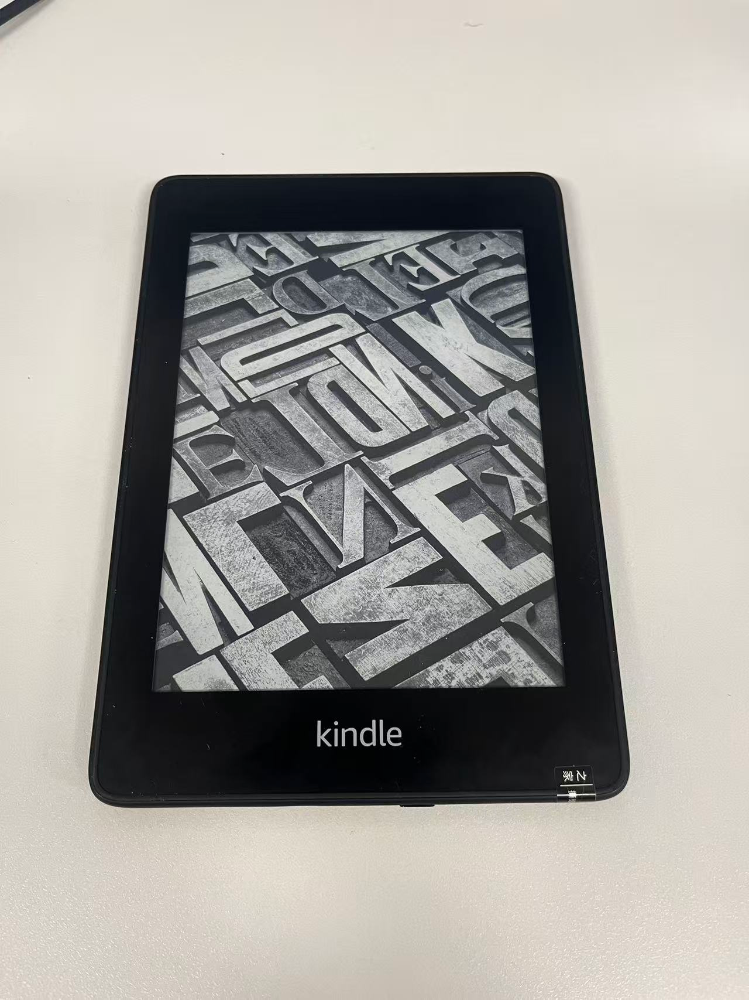

Table of Contents
- 1. DONE About me
- 2. DONE 搜索
- 3. DONE 文章归档
- 4. TODO Template
- 5. DONE “九大艺术”
- 6. DONE 男性秃头，发质细软塌的对策 med
- 7. DONE Windows 资源汇总 windows
- 8. TODO Emacs, Hugo, Codex：2025 年搭建个人博客的三位一体 emacs hugo ai
- 9. TODO Google Calendar + Thunderbird：大學生課表與工作安排入門
- 10. TODO 信息熵的藝術：個人 RSS 閱讀工具基礎建設
- 11. TODO 給我一個買 mp3、遊戲機、電子書和手柄的理由（手機不好玩嗎？）
- 12. TODO chezmoi：全平臺配置文件管理 linux windows
- 13. TODO 真·自我提升與成長的網課及學習資源
- 14. TODO 永遠爲你的學習準備第二本教材
- 15. TODO 學 Vim，Emacs，VSCode 最爽的瞬間 top 10
- 16. TODO Kindle 個人使用評測——這樣越獄，能讓二手 Kindle 多值 100 元！
- 17. DONE 2025年的四十問
- 18. TODO 不想刷SICP就給我X——計算機科學的入门神书
- 19. TODO “然而，這畢竟是我的孩子”
- 20. TODO 我为老ThinkPad安装了BSD！这是它的结果……
1. DONE About me
4chan user, old school player, child educator and a man doing hacker. Studying Master program in Cyberspace Security from Jinan University. Proud of my jack of all trades, surely master of none but still proud.
1.1. Professional Skill
- Maybe make things with AI category
- Programming: Python, javascript
- Software: Emacs, Latex
- "Skill issue" category
- Programming: C, C++, bash, Lisp
- Software: Docker, Git
- Learn X in Y minutes category
- Programming: Java, Go, Rust
- Framework: React
Other techs I've learned:
- GNU/Linux Distro, install and usage. InstallGentoo for 3 times and do LFS walkthrough one time. Also has experience with FreeBSD and Hackintosh, etc. Obsessed with notebook All in One in my college life.
- Vim and Emacs, the God of Editor and the Editor of God. I use them for writing org mode, also this blog.
- PL Theory and Proof Assistant. AKA Lean4.
- Music Production.
- Private Tracker.
1.2. Hobbyist
- Language
- Mandarin (Native Speaker); Output Simplified Chinese, Can read Traditional Chinese fluently; Cantonese (Just for fun).
- English (B2+ by passing CET-6 with 570 point), also watch English TV operas.
- Japanese (
B2 by passing JLPT N1B1 by N1 89 points which still failed :-( ) - Learning French, Korean and Russian, still at alphabet. Seriously it takes time and effort.
- Another major course
- Medical: anatomy
- Law: legal theory
- Entertainment
1.3. Battlestation Now
Dell G15 with RTX 3060 Laptop, Windows 10 IoT LTSC. Connected with 27-inch 4K monitor, KEMOVE K61 mechanical keyboard, and XBox Controller for gaming.
Still a desktop is preferred, so that my 16TB HDD can directly put in. (2025.8.20)
2. DONE 搜索
layout = "search"
summary = "search"
placeholder = "进行搜索……"
3. DONE 文章归档
4. TODO Template
kicker = ""
hero = "/ox-hugo/template.png"
5. DONE “九大艺术”
6. DONE 男性秃头，发质细软塌的对策 med
理性讨论，文章内容不代表本人（
6.1. 引子
男生发型不好，可以剪可以染烫，但是头发没了就真的没办法了。不重视发型是大多国男的缺憾之一。 如果头发打湿后肉眼可见头皮，则头发肯定是太过细软了，是脱发的前兆。 细软发质本就显得头发稀少，根本留不了发型，脱发后更是对二十岁的人打击甚大。
发质细软乃至秃顶，细软可能是发质天生如此， 也可能是头发毛囊逐渐退化而闭合，生发的能力越来越弱。 毛囊闭合是不可逆的，这种情况只好植发。 而更多人正是在出现脱发时才注意到要保护头发，可惜为时已晚。
目前证明有效的制止脱发，主要靠三样：
- 药片：非那雄胺(Finasteride)，或是度他雄胺(Dutasteride)
- 洗剂：米那地尔
- 洗发水：酮康唑
6.2. 非那雄胺·度他雄胺
雄激素性脱发[1]（androgenetic alopecia，AGA）[2]俗称早秃[3]，旧时误称脂溢性脱发， 是前额上部或头顶部头发逐渐稀少，最后头皮光滑或有少许细毛，有时合并皮脂溢出，多见于男性。
非那雄胺的原理是，压制双氢睾酮（DHT）的生成，减少其对毛囊的作用。 男性更易脱发，关键在于睾酮部分地(10%)转化为 DHT， 而 DHT 主要起到第二性征发育的作用，过了青春期后只能产生让人毛囊收缩消失的后果。 非那雄胺是一种 5-alpha 还原酶(5ar)抑制剂，通过阻止 5-alpha 还原酶将睾酮转化为 DHT 实现减缓雄脱。 男性更易脱发，关键在于睾酮部分地(10%)转化为 DHT， 而 DHT 主要起到第二性征发育的作用，过了青春期后只能产生让人毛囊收缩消失的后果。 非那雄胺是一种 5-alpha 还原酶(5ar)抑制剂，通过阻止 5-alpha 还原酶将睾酮转化为 DHT 实现减缓雄脱。 由此，非那雄胺更多是阻止继续掉发，或许能稍微恢复一点头发，也有些人的生发效果很好。
5ar 抑制剂对剂量不敏感，0.2mg 用量可以减少 68% 的 DHT， 5mg 用量可以减少 72% 的 DHT。 5ar 抑制剂对剂量不敏感，0.2mg 用量可以减少 68% 的 DHT， 5mg 用量可以减少 72% 的 DHT。 度他雄胺的效果更强，0.5mg 用量可以减少 95% 的 DHT，但是会更贵一些。 度他雄胺的半衰期为 8 小时，每天吃一片，疗程三个月。 度他雄胺的半衰期为 8 小时，每天吃一片，疗程三个月。
非那雄胺长期用于治疗前列腺增生，对人的副作用与效果已经被研究得很明白了， 我的外公也吃非那雄胺，他是治前列腺不行，老人漏尿的。 但有 1-2%的可能性会导致 ED。说实话对于 可以通过减少摄入药物等来避免。保法止 1mg 足以起到防脱发作用。 但有 1-2%的可能性会导致 ED。说实话对于 可以通过减少摄入药物等来避免。保法止 1mg 足以起到防脱发作用。
6.3. 米那地尔
米那地尔(Minoxidil)通过打开钾离子通道，扩张头顶毛囊血管从而刺激毛发生长期。 米那地尔配合非那雄胺来恢复头发，在脱发早期（NW2 期之前）最有效果。 米那地尔配合非那雄胺来恢复头发，在脱发早期（NW2 期之前）最有效果。
6.4. 酮康唑
6.5. 雌激素
抗雄激素：螺内酯(spirolactone) 通过抑止睾酮，从而抑止 DHT。 抗雄激素：螺内酯(spirolactone) 通过抑止睾酮，从而抑止 DHT。 雌激素：戊酸雌二醇，用于补充雌激素，防止性激素紊乱。
注意这些药用于男性转女性的激素替代疗法，比 5ar 抑制剂更加容易导致性功能问题。 注意这些药用于男性转女性的激素替代疗法，比 5ar 抑制剂更加容易导致性功能问题。 但是，的确有人为了有女性一样的发质而吃抗雄激素与雌激素。
7. DONE Windows 资源汇总 windows
7.1. Windows / Office 激活
打开 Windows Powershell 然后执行：
irm https://get.activated.win | iex
使用 HWID 激活 Windows，使用 Ohook 激活 Office。
7.2. 下载 Windows/Office
Win10 Enterprise IoT LTSC 2021 is all you need.
- 🉑安全更新到 2032 年，让微软多修几年 Win11。
对比：企业 LTSC 版支持到 2027 年，企业物联网 LTSC 版又多五年支持 - 🉑安全更新到 2032 年，让微软多修几年 Win11。
对比：企业 LTSC 版支持到 2027 年，企业物联网 LTSC 版又多五年支持 - 没有多余应用，等同于精简版；
预安装 Edge 浏览器和 Win32 系统应用。 - 与 LTSC 在二进制水平上完全相同，除了没有 MS Store。
下载 MS Store：wsreset -i。 预安装 Edge 浏览器和 Win32 系统应用。 - 与 LTSC 在二进制水平上完全相同，除了没有 MS Store。
下载 MS Store：wsreset -i。 或者，安装winget和scoop管理一切。 - 可手动安装安全更新
Win11 Enterprise IoT LTSC 2024
- 与 Win10 IoT LTSC 很像
- 使用 React Native 重写 UI (???)
- 这个 Intel 12 代以上的大小核调度 是不是非要不可，然后可以考虑这一版
- 否则就等着 IoT LTSC 2027 吧
其他 Win10/Win11 家庭版/专业版/教育版/企业版/企业版 IoT
- 预安装 Edge, Win32 系统应用，MS Store，OneDrive, 天气，电影，音乐，Candy Crush，等等
其他 Win10/Win11 家庭版/专业版/教育版/企业版/企业版 IoT
- 预安装 Edge, Win32 系统应用，MS Store，OneDrive, 天气，电影，音乐，Candy Crush，等等
- 特性更新时自动更新应用
- 仅 1.5~3 年支持
- 仅 1.5~3 年支持
- 强制更新
Office 版本
Microsoft 365 优于 Office 2024，因为它包含只有 365 才提供的以下功能。 - PowerPoint 中的设计器 - Word 中的 Microsoft 编辑器 - Excel 中的最新公式 - 高级字体和图标 - 辅助功能增强 Microsoft 365 会定期接收更新，所有应用程序都会获得新功能和改进。相比之下，Office 2024 仅接收安全更新，没有新增功能。 -- Massgrave
7.3. Windows 软件管理 in 2025
从 WinXP 时野蛮生长的软件安装， 目前已经产生了安装速度、安全来源与可复现构建等多方面的困扰。 Linux 比 Windows 好就好在有一个包管理器， 而坑也就坑在不同发行版都有自己的包管理器。 好在现在 Windows 的可用包管理器与 Win10 和 Powershell 结合得很好，
- Chocolatey 是 Windows 的经典软件包管理器。您可以在其中找到所有需要的东西。
- Chocolatey 是 Windows 的经典软件包管理器。您可以在其中找到所有需要的东西。
- Scoop 包含不知名但有用的实用程序和其它有趣软件包的重要存储库。
- Winget 是微软的官方软件包管理器。拥有知名的、经过验证的众多软件包。
UniGetUI则是包管理器的 UI 界面，个人感觉等于把包管理器大一统了……

建议 UniGetUI 多用吧。
7.4. Windows 软件推荐
7.5. Office 教程
很多 Office 的知识点是面向计算机二级的； 非科班的玩不来电脑，计算机科班的又不考计算机二级。 但是计算级二级水平的 Office 知识对计算机科班而言同样必要， 这样至少不会因为玩不来 Word 排版而选择梭哈 \(\LaTeX\) ， 反过来歧视 Word 怎样地劳心费力，不如 \(\LaTeX\) 一根。
推荐（付费视频）教程：向天歌的PPT/Excel/Word大神上分攻略。
配套电子书教材：PPT 之光/Excel 之光/Word 之光。
配套电子书教材：PPT 之光/Excel 之光/Word 之光。
我曾拜读过 Oeasy 老师的教程，现在就感觉这玩意还是太老了且缺乏体系， 拿出来个系统是 Windows Vista，Office 2007。 虽然我也曾认为 Office 2003 是 Golden Standard， 可能只是因为与 WinXP 和华军软件园更搭配。
举例如 Word 教程的一些我认为有必要学习的知识点：
- 样式 作为结构化排版的基础
- 尾注 ， 页眉页脚 ， 表格 都是写作论文的细节
- 查找与替换 ，大家都很熟悉正则表达式吧，Word 也有这种东西
- 邮件合并 虽然听上去很没用，但也是计算机二级的考点，还有一些妙用
8. TODO Emacs, Hugo, Codex：2025 年搭建个人博客的三位一体 emacs hugo ai
我看 Emacs-Hugo + Codex 搞得不错，静态网页生态极大丰富，迁移困难基本消灭，网站风格、程序员审美也受重视， 如果加上我的雄文，这就是我理想中的博客站点[21]。
我大一大二(2021 年)时就开始研究搭建个人博客与 md， 当时使用基于 Hexo 的博客工具，连命令行与 npm 都玩不转，部署起来十分痛苦。 我大一大二(2021 年)时就开始研究搭建个人博客与 md， 当时使用基于 Hexo 的博客工具，连命令行与 npm 都玩不转，部署起来十分痛苦。 现在过了四年，略通一点博客的搭建思路，分享出来，让更多人不走弯路。
这篇文章的目标用户？
主要是面向 Emacs 用户的一套搭建博客的技术栈—— Emacs 是在程序员中具有独特生态位的纯文本编辑器。 对于没有 Emacs 经验的读者，也可以阅读其中有关纯文本的讨论，然后使用 VSCode 或其他 Markdown 编辑器。
阅读方式
本文各部分没有很大关联，不需要按顺序阅读。对于在 Windows 上写博客的初学者，推荐阅读“基础”部分， 了解博客工具如何通过命令行运作。
8.1. 基础：Markdown，命令行，git，以及 VSCode
8.1.1. Markdown：最流行的纯文本格式
8.1.2. Windows 命令行解说
Linux 用户注释：这一段的“命令行”不止于 cmd.exe，相当于 shell 的中文名，两者可以通用。 实际上解释的是如何切换到 powershell 并准备好包管理器 scoop，从而下载 Hugo。
打开 powershell：在这一步后你应该看到
Windows PowerShell Copyright (C) Microsoft Corporation. All rights reserved. Try the new cross-platform PowerShell https://aka.ms/pscore6 PS C:\Users\pilrymage>
搜索框或 Win+R 键调出。
下载 scoop。如官网所说
Set-ExecutionPolicy -ExecutionPolicy RemoteSigned -Scope CurrentUser Invoke-RestMethod -Uri https://get.scoop.sh | Invoke-Expression
8.2. Emacs-Orgmode：纯文本输出
8.3. Hugo：最快的静态网页生成器
8.4. GPT Codex：个人主题定制
Codex 等寫代碼的 AI 應該相當擅長前端。尤其是，它讀過的博客代碼應該比我們看得多得多。 Codex 等寫代碼的 AI 應該相當擅長前端。尤其是，它讀過的博客代碼應該比我們看得多得多。 發揮一點樸素的美感，給自己的前端寫箇個人主題吧！這比 Wordpress 的拖標籤爽快多了。
8.5. GitHub：部署托管个人网页
9. TODO Google Calendar + Thunderbird：大學生課表與工作安排入門
10. TODO 信息熵的藝術：個人 RSS 閱讀工具基礎建設
<<<<<<< HEAD
11. TODO 給我一個買 mp3、遊戲機、電子書和手柄的理由（手機不好玩嗎？）
date = 2025-01-01 # 评分时间
genres = ["historical"]
recommended = true
kicker = ""
[cover]
image = ""
hero = ""
11.1. 專器專用
11.2. 買 mp3
11.3. 買 mp3
超出預期的體驗：
- 音量的調節粒度更細
- 支持 flac 無損音頻，相比於套殼解碼器只能播放 mp3。
- 支持 flac 無損音頻，相比於套殼解碼器只能播放 mp3。
- 更實在的機械按鍵，不用看屏幕操作
11.4. 買手柄
11.5. 觀望遊戲機與電子書
12. TODO chezmoi：全平臺配置文件管理 linux windows
date = 2025-11-06 # 评分时间
# genres = ["historical"]
recommended = false
kicker = "Configure once, run anywhere"
[cover]
image = ""
hero = ""
把自己的 .emacs.d 搞丟的人，以後再也用不了 Emacs 了。 不要學這種人
能夠以 Linux 作爲桌面系統的系統管理員們，手上一定少不了一套高度定制化的 Linux 配置。 但是對於發行版愛好者，弄壞系統并重裝各種版本的系統又時常發生（Archlinux：在想我的事？）。 因而必須想辦法管理這些配置以方便系統遷移，也是 Linux 運維的基本操作。
首先想到的當然是對純文本配置用 git 管理了吧，用一整個配置倉庫來管理。
然而 Linux 配置的特色便是各有各的放法，比如 XDG 規定放在 $HOME/.config/<name> 下面，
而 .bashrc ， .profile 等又是簡單放在 $HOME 下面。
還有如 .emacs.d/ 或放在 /etc 下面的系統配置。
也有人想到用 git 的高階操作，可以讓倉庫添加文件而不必在倉庫的子目錄之內。
但是這還是相當的不穩健——我感覺我 git branch 都沒用明白呢，到時後忘了指令該怎麼辦。
升級版的配置方法是使用 GNU Stow，實質上是生成并管理符號鏈接的工具。
一個相當無腦的用法是 cd ~/dotfile && stow . ，
可以在家目錄下生成軟鏈接，指向配置文件與目錄。
而你所需要的，只是 ~/dotfile/.config ， ~/dotfile/.emacs.d ，等等。
然而還是有些缺陷：基於 Linux 符號鏈接的程序可能無法在 Windows 上面使用。
但是有時也會需要在 Windows 上使用配置，比如 Rime 中州韻/小狼毫。
chezmoi 可以解决各平臺的配置文件問題。
它真正地把 git 倉庫容納其中，倉庫中跟蹤的各文件情況對 chezmoi 可見，
你可以使用 chezmoi 命令與配置倉庫交互，添加編寫好的配置文件。
同時， chezmoi 支持 go 語言的模板，從而區分不同系統上的配置，其內部情況則封裝到 chezmoi 的倉庫裏。
13. TODO 真·自我提升與成長的網課及學習資源
date = 2025-11-06 # 评分时间
# genres = ["historical"]
recommended = true
kicker = ""
[cover]
image = ""
hero = ""
13.1. 核心渠道：書與網課
13.2. 數理基礎（理科生並感）
13.3. 計算機
13.4. 經濟學/金融
13.5. 法律
13.6. 文史哲
13.7. 音樂美術
14. TODO 永遠爲你的學習準備第二本教材
date = 2025-11-09 # 评分时间
# genres = ["historical"]
recommended = true
kicker = ""
[cover]
image = ""
hero = ""
一本教材，或一套課程，含作者對一個領域的知識體系的思考。 最被推崇的教材就更加地展現出作者的奇思妙想，按照學數學的來說即是 高觀點 ，一下就能給你點清楚知識的關聯。 同一個領域，不同的人就有不同的視點，所提供的體系的組織思路也不一樣。
對於一些教學方法成熟的領域（比如高等數學），或許已經有了相對固定的學習路徑： 先學初等函數和極限，然後入門一元微積分，再擴充到多元微積分，諸如此類。 然而不同的教材有不同的着重點與不同的思路，仍然能讓你對高等數學大爲改觀， 哪怕你只是知道數學系學的是進階的 數學分析 ，都能讓你十分受用。
- 《托馬斯微積分》就强調手算與大量物理學/生活實例，從頭算幾次三維曲面上的通量，就不會對抽象的數學畏難； 此書還大篇幅補充了初等函數的運算規則，讓高中生也能自學微積分。
《數學分析原理》（Walter Rudin）則站在數學分析的高度，刻意只講分析與推導，弱化計算， 能夠快速培養對純數學的洞察力（insight），正與數學研究需要快速趕上研究前沿的需求相合（Yau 並感）。
但是弱化計算使得此書不利於數學專業做題，建議配套數學分析習題集
- 《流形上的分析》（Munkres）則直接提醒你建構實數系的本質是點集拓撲，而多元微積分的本質是流形上的積分。 這便是重新學習微積分的第三本書。
最推薦的教材首先得是行業內一致認可的經典之作，因爲人生苦短，市面上百分之九十的書都不必看。
這包括絕大部分中文作者的書——除了馬院和漢語言之外，想要取經還是得到西天，去讀老牌英美院校教學法滲透得最完整的教材。
你應能夠深刻地認同作者的教學邏輯，如果你不喜歡就拉倒，換一本書讀。
因爲人的興趣總是推進學習的動力，但是百分之十的經典著作也很多，成熟領域從舊到新至少有五六本書都能達到相同的目的，不如選一本讓自己開心的。
圖書之間知識點的關聯性與互補能力。
最直觀地，面向讀者水平不同，教材也能分出“XXX 101”“XXX Second class”“Advanced XXX”等等種類。 又或者是教材側重點不同，譬如同樣是和弦，流行、古典和爵士的樂理因爲演奏的音樂不同就能做出新的解釋。
讀五六本書，讀得稍深一點，直到卡頓的地方，則切換到另一本書。 然後，找到你比較喜歡的兩本書，深入閱讀全本。 現在，AI 聊天也相當好用，因爲它就是一個閱讀了市面上所有書的老師，只是不記得某段話出自哪裏。 通過與高水平的 AI 對話（ie，最先進模型的“長考”模式），可以極大地滿足學習的好奇心，亦能補充書上沒有的闕處。
15. TODO 學 Vim，Emacs，VSCode 最爽的瞬間 top 10
genres = ["historical"]
recommended = true
kicker = ""
[cover]
image = ""
hero = ""
16. TODO Kindle 個人使用評測——這樣越獄，能讓二手 Kindle 多值 100 元！
kicker = ""
[cover]
image = ""
hero = ""
你有沒有這樣一種經歷：在初高中十幾歲時夜半不睡覺，拿着一個 2 寸一點大屏幕的 mp3 看小說。 雖然 txt 排版的圖書格式很爛還有錯別字，但是真能讀上幾百來頁不帶停，讀完一個系列還意猶未盡。 如果有，那麼恭喜你，你也是一位愛書之人，而 Kindle 正是給喜歡讀書的人的好東西。
16.1. 選購 Kindle 的想法
作爲遠離手機的一步，我希望 Kindle 能夠承擔我的閱讀需求，專器專用也。
選購一個二手 Kindle，因爲 Kindle 耐用而二手實惠（ 相信很多 Kindle 都用來蓋泡面了 ），
而且正版 Kindle 很有可能限制越獄功能，否則商家不給保修。
我的選擇是購買 Kindle PaperWhite 4, 因爲墨水屏能防止屏幕傷眼，更方便閱讀。
本來以爲 KPW 有個 6 寸大，尺寸和我的 iPhone13 差不多也行。 此 95 新 KPW4 是 380 元入手，實際上拿到這個六寸却是一個小平板一樣，其大小遠超出我的預期。 雖然有明顯但不影響閱讀的劃痕，這價格要什麼自行車呢。

16.2. 越獄流：Adbreak 踩坑記錄
Kindle 是基於 Linux 的系統，很多在 Linux 上找到的漏洞都可以套在 Kindle 上以提升權限。 越獄方法就是這麼來的。
推薦英文社區的越獄教程：Kindle Modding Wiki ， 以及中文社區的相關補充內容： Kindle 为什么要越狱？Kindle 越狱有哪些风险和好处？ – 书伴， 或是L站的翻譯。 這裏只講一些個人的具體操作。
越獄與閱讀器的固件版本相關：低於 5.18.1 版本可以用 WinterBreak 越獄，
而再高一點點則需要 AdBreak 。注意查看固件版本高低以選擇破解方式。
就以我的 Kindle Paperwhite 4 爲例，你需要一個 不在中國 的亞馬遜賬號，
因爲他們的電子書商場已經退出中國，不會給你推薦對應的廣告。
如果你在英文社區的 Troubleshooting 看到有 CN，不要相信……用美國地區吧
給亞馬遜的賬號做到國外去，只需要提供國外地址（使用谷歌地圖），手機號都用國內的就可以。 雖然，還是建議用國外手機號（GV 等），親測國內運營商可能收不到短信。 如果已經注冊了國內賬號，則可以先注銷賬號（已購電子書清空，最後需要在短信裏確認注銷）。
剩下的就是改變賬戶地址，添加支付方式，然後打開廣告。 你需要在亞馬遜官網登錄，Account → Digital Services and Device Support → Kindle Content → Manage Your Content and Devices → Preferences → Country/Region Settings → Change 以修改賬戶地址（填一個真實地址）。 同頁面的 Digital Payment Settings 跳轉到 Your Payments ，添加銀行卡（包括銀聯卡）； 然後回到 Devices，打開 SPECIAL OFFERS。 如果你的地址和支付方式都是可用的，就不會出現報錯，成功打開廣告。 否則，回去再檢查一下地區和支付方式。
另外，當 Kindle 可以看到廣告後，電腦連接 Kindle，
你可能找不到其中的 system 文件夾，即使打開了文件管理器的“顯示隱藏文件”。
那麼，你可以用 PowerShell 命令行操作，或是手動輸入 D:/system 進行訪問。
16.3. Koreader 體驗 & FAQ
總體而言，Koreader 的體驗是好於 Kindle 原生閱讀器的。
16.3.1. 一贏：PDF 閱讀 ATTACH
雖然屏幕比平板小，最令我驚艷的却不是讀文字，而是讀 PDF 的能力。 它有一個自動切屏的功能，去除兩邊的空白而只展現文字， 配合 PDF 橫放實在是閱讀器中的黑科技。
讀一些文學專著都夠用了
16.3.2. 二贏：書架與歷史記錄
16.3.3. 三贏：自定義字體、插件等功能
- profile 插件，美觀的
- assistant AI 插件，閱讀神器，就憑開源這個功能也能打過一票閉源閱讀器。 配合免費大模型 api，就是最好的閱讀助手。
16.3.4. Calibre 配合 KOReader 的一些細節
Calibre 是一個開源的圖書管理工具。自然，它也對最出名的閱讀器做了適配。 把 Kindle 直接連到電腦上，Calibre 會把 Kindle 當作設備并與之同步，發送圖書到設備。 但對於越獄後安裝的 KOReader，它默認跨平臺支持 epub，而對於 mobi 文件，不能展現其封面， 然而 Calibre 會在把圖書發送到 Kindle 時自動把 epub 圖書轉化爲 mobi 格式。 因此，KOReader 裏可能看不到這些圖書的封面。
解决方法是修改 Calibre 的插件在發送圖書到 Kindle 時的默認行爲。 打開首選項 → 高級選項 → 插件 → 設備接口 → Kindle Device Interface， 點擊“自定義插件”，在“可用格式”中找到 epub，并將其
17. DONE 2025年的四十問
kicker = ""
hero = "/ox-hugo/_20251221-154545screenshot.png"

- 你今年做了哪些之前从未做过的事？
今年寫了這個四十問1。 雖然沒人過問，今年也是第一次回答四十問，然而每個習俗總是有個發端； 如果可以，每年都寫一篇記錄，來看看自己22歲之後的生活。
一個現象是，度量生活的尺度越大，從一天到一周、一月、一年，人所做的事情是趨於確定的。 比如，一天你可以在家在學校打遊戲寫作業，或是萬達廣場吃着火鍋唱着K，還能去看演唱會，去跑團和桌遊； 然而一周之內要麼是上課或考試周、要麼是旅遊黃金周、或是過年的一周。 你完全能預測到一個月之內你主要是做什麼：一學期的第一個月準備回校、第二、三個月上課、第四個月準備考試和放假。 甚至放到一年，不出意外的話你還是個學生。 你用六年讀小學、六年讀初高中、四年讀大學，從而適用於一半以上的大學生的生活軌跡。 我都不用說，現在的10後沒一個活到成年，或是200年後人都要死，這種極强的客觀規律。
物理學有個詞叫“重整化”來描述這一現象，即在微觀世界中混亂無序的自由狀態，放到宏觀世界就會涌現出一致的規律。 生活同樣被重整化的趨勢是不可避免的。而我希望能通過記錄一下自己的生活，看看自己有沒有獲得更多的進步。
今年買了電吉他。作爲不會寫音樂的補償，玩一玩樂器吧。
電聲樂器正是二十世紀下半部分的音樂的核心，不學一下就不能完全地理解搖滾技術， 而搖滾的地位在當代流行音樂中一向很高。 雖然如此，現在玩玩樂器也沒有强烈的動力，可能會鴿了。
- 你有没有遵守年初时和自己许下的约定？
- 我一直在想今年要發布自己的音樂專輯，很可惜今年只是稍微玩了一點合成器，學了一點樂理， 而這都與實際做音樂的進度沒太大關聯。 Richard D. James 14 歲時就做出了震驚世人的IDM音樂，直接影響了《我的世界》的音樂風格； 我實在擔心再大一點就因爲太老而做不出我心目中的好音樂了 （Too old to music ）。
- 另一個就是開自己的博客，反反覆覆寫過很多次，然而沒有堅持下來。 但是現在已經實現了， 感謝 GPT Codex 讓我能編寫出自己的博客……。
你身边有人生孩子了吗？
暫無；然而我看到很多找到了對象，還發在朋友圈裏！
你身边有人去世了吗？
死亡離我還很遠；最近的身邊人是我的一位姨外婆，得了腸癌而家人不讓已知，形容枯槁消瘦。
你去了哪些城市/州/国家？
重慶，就是那個籤立雙十協定的地方、吃麻油火鍋、坐一坐長江索道，巴適得板。
最大的感想是吃個涼面要放糖，比較離譜。
在山城重慶，自動檔司機也要考上坡停車起步。 另一個感想就是外國人也很多（比長沙多），明明是更加內陸的地方。明年你想要获得哪些你今年没有的东西？
如果是自已攢的話，就搞一個開源遊戲機，裝一些經典老遊戲玩玩。
如果是別人送的話，來一款單反相機，我就能學一學攝影，拍一拍夜空最亮的星（現在還是iPhone拍照的水平）。
今年的哪个或哪些日子会铭刻在你的记忆中，为什么？
今年一月初的考研，以及本科畢業論文的答辯。 還有拍畢業照的那天，自我感覺十分奇妙：我真的有一宿舍的朋友。
2025年8月21日，我考過了自動檔科目三。 sooooooo coooooooooooool
你今年最大的成就是什么？
拿下駕照
你今年最大的失败是什么？
我的英語教學方法，如果能灌輸給我的親妹，讓她掌握英語的道理，想來對學習的促進作用是巨大的。 可惜我沒能帶領好她，十分可惜。 可能是因爲已經學了書法和繪畫，她是要走藝術生路綫的。
另：我一直支持未來的趨勢是做好躺平準備，不應梭哈理工科知識，因爲理工人的供給明顯過剩了； 然而現在才發現，學會英語仍然是爲數不多有明顯正收益的學習，即使是决意躺平的人。 關鍵詞：睜眼看世界。
你今年还遇到过哪些困难？
畢業論文急忙趕制，或是其他種種，寫論文的時候如同地獄風景，皮質醇爆表。
- 你今年是否生过病或受过伤？
- 二月份在老家，鼻腔發炎；可能是因爲在廣州待太久，鼻腔已不適應冷空氣導致過敏。 爲此買了幾十塊錢的鼻鹽水噴劑。
- 五月份因不明原因發高燒，半夜兩點問宿管要布洛芬。 這一下就難受了三天，終於去醫院問診，醫生也只是打布洛芬點滴。 之後加購兩板東北製藥的維C片。 後來發現需要用學生醫保抵錢但不知道怎麼做，這都是後話了。
十二月份，切紅薯時水果刀不小心手刃到大拇指。 馬上做了止血與消毒，加上雖然砍進肉裏，并沒有掉下來什麼東西，一周也就好起來了。贊美人體的恢復能力。
同時，意識到左手大拇指的重要性：沒有它我就按不住空格鍵，也轉不了手柄左搖杆，雖不致命但也有點煩。
- 其他微小的劃傷燙傷，不計其數。 提醒諸位：了解一點急救方法總是很好的，包括不要用雲南白藥污染創口。
你今年买过的最好的东西是什么？
最好的是二手 Kindle ，帶給我閱讀習慣的新希望，我主觀認爲它是最好的。
其次則是在漲價浪潮之前買下的32G筆記本內存。低買自用這一塊。
再次則是減肥的 Semaglutide，讓我一個月減下15斤肉；然而後來發現回到學校就會反彈，因而評級下降了。
谁的行为值得去表扬？
知乎 @你的ZombieMan 和知乎 @陈仙男大天才 是在知乎上最近關注的兩位義人。
前者精確把握兩性情感爲男同胞去魅，後者則打破社會認知信息差，大力推廣躺平套利方案。 我聽了這兩位義人的講，受益良多。
谁的行为令你感到震惊？
我的姑姑她女兒終於上高中了，最近時不時地請我給她女兒補習物理。
因爲我實在沒有高中補習的經歷，我覺得高中生要麼待學校自己學習好了，補習就沒什麼必要。
你大部分的钱都花到哪里去了？
除了吃飯和學費，就是買電子產品了。
有什么事让你感到超级、超级、超级兴奋？
當聽一首歌并對上電波後，只要大力晃動四肢，就會發出發癲一般的尖笑與咆哮，抽象地爬行。
啊，那就是波奇醬在無人知曉的地方發起癲一樣的感覺。只要沒有活人看到我發癲。
哪首歌会永远让你想起这一年？
Justice – Neverender (Starring Tame Impala) (Official Video) - YouTube
這是2024年發的一首歌；即使MV是宇宙歌劇風格，聽起來頗有撥雲見日的快感。
与去年的这个时候相比，你是：感到更快乐还是更悲伤了？变得更瘦还是更胖了？变得更富还是更穷了？
我說：我是更有一點自信了，因爲考研已考完，眼前的道路已經確定，它是往更有期待的方向延伸。 我確信這是我想要的。
可能是有一點變胖了。
你希望自己能做得更多的是什么？
Anki 上總有一些需要背的東西，雖然它對我確實有用，但是我也沒來得及背。
盡量減少背誦任務的負擔，可能唯一有剛性背誦需求的就是背單詞。如果能堅持背誦就好了。（然而現在不是時候）
你希望自己能做得更少的是什么？
少吃一點快餐比較好，我被碳水搞得天天扁桃體腫大+喉嚨炎症，苦不堪言。 現在宿舍搬出了學校，可以買一些水果送貨上門了，或許會好一點點。
你是如何度过节假日的？
在工位上坐一天。最好不過沒人打攪。
你今年坠入爱河了吗？
實驗室一位研二師姐，仗着小臉長得好看了一點，來勾引我這個純情男大（雖然互不認識）。
啊啊，我一定是顏控吧。然而你看着就心機很多，可能男友都換了幾個。誰不會喜歡你呢？
現在實驗室工位已經搬遷，你就再見不到我了，我也安心許多。
你是否有讨厌某个你去年此时不觉得讨厌的人呢？
知乎 @九乡河龙牙，原本關注他是看他講一講馬一龍的航天技術， 然而現在一天到晚鼓吹他那个福的考公考編， 號稱大學生的的命運就是要一直考公到38歲，把我看得超級無敵焦虑。
您也是老保是麼，很難不討厭了。
你最喜欢的电视节目是什么？
大長今是我今年刷得最快的電視劇。這種帶點歷史背景的劇是很好的。
仁醫 也挺不錯。
你读过最好的一本书是什么？
今年是馬伯庸的長安十二時辰。
你今年发现的最好听的一首歌是什么？
我聽的好歌太多了，應該再細分這一塊……
結合 Last.fm 聽過的最多音樂的記錄：
你今年看过最喜欢的一部电影是什么？
你今年吃过最好吃的一顿饭是什么？
滿記甜品的琥珀果仁雙皮奶(29¥)。乾果加入雙皮奶吃起來很爽！
有什么是你想要且得到了的？
RED 站的藥，我靠 OPS 面試曲綫救國刷出來了；順帶附送 GGn 的藥，後者成爲了我一整年的寶藏網站。
有什么是你想要却没有得到的？
我之前一直想買一個 Switch 吧，破解的也好。但是今年6月就出了 Switch 2。
即使買新不買舊，現在的 Switch 1 也有很多人炒，600 元子一個呢；
我想入手一個磚機（便宜一點）自己刷固件，結果就是固件也要到網上買的，二十塊錢一個；
我不願意接受我自己不能獨立破解越獄出來東西，然而折騰硬件已經是EE學生的工作了； 後來我就把 Switch 的事給淡忘了。
你生日那天做了什么？
我沒什麼實感，但家裡做了一頓豐盛的晚飯（可能是點了烤鴨外賣來慶祝，我不記得）。
有什么还未发生的事，如果发生了，会让你的这一年变得无比满足?
把我的該死的音樂專輯做好并發出去。
你会如何描述你今年的个人时尚风格？
稱不上風格，只是稍微脫離了一點理工男審美，終於來到直男審美平均值！
是什么让你保持理智？
非那雄胺+手藝活
你最欣赏哪个名人/公众人物？
知乎@東雲正樹，腳底板學問家，領先粥遊潮流數年；他的評論區有最多的吊圖。
哪个政治问题最令你有感而发？
現在最火熱的女權問題，也正在逐漸地脅迫我的歲月靜好。男的看上就就要被女的打倒了！
我時不時會對着一些具體案件應激，私下發表一些看法。 然而更多可能是因爲國男與女性相處經驗不足帶來的結果。 （就是太內向了）
你想念哪些人？
高二的同學，其智商平均值可能是我所見過最接近於義人的。
除非哪天我再去P大T大巡禮一遍。
在你新认识的人之中，谁是最好的？
我的最後一位駕校（女）教練，她帶我考過了駕照。
- 今年你学到了什么宝贵的人生经验？
選擇大於努力；特別地，要選擇環境就要選擇自己能輕鬆壓別人一頭的環境。
比如我知道自己完全有中上985的實力，然而待在普通211裏也沒關系。
這樣就不會陷入被別人審視與選擇的悲劇，能更多地找到自已。
22歲是精力、時間、情感最爲充沛的時候。不要在惡性競爭中浪費性命，要保存資源。
——然後在機會到來的那一天，賭上全力去梭哈。
人生是一種“隨機過程”。
很多時候，機遇是被隨機性决定的；甚至我今天上網有什麼新發現與想法，都純看我得到了什麼輸入。
因此，過好生活的重要方法是，盡可能多地做出嘗試，從而在疊加的隨機性中得到確定的結果。
能够总结你这一年的一句话是什么？
Two roads diverged in a wood, and I—
I took the one less travelled by,
And that has made all the difference.
18. TODO 不想刷SICP就給我X——計算機科學的入门神书
genres = ["historical"]
recommended = true
kicker = ""
[cover]
image = ""
hero = ""
e
19. TODO “然而，這畢竟是我的孩子”
genres = ["historical"]
recommended = true
kicker = ""
[cover]
image = ""
hero = ""
20. TODO 我为老ThinkPad安装了BSD！这是它的结果……
kicker = ""
hero = "/ox-hugo/template.png"